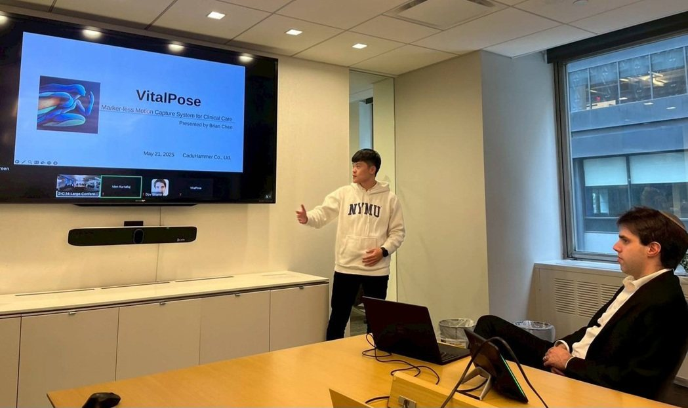
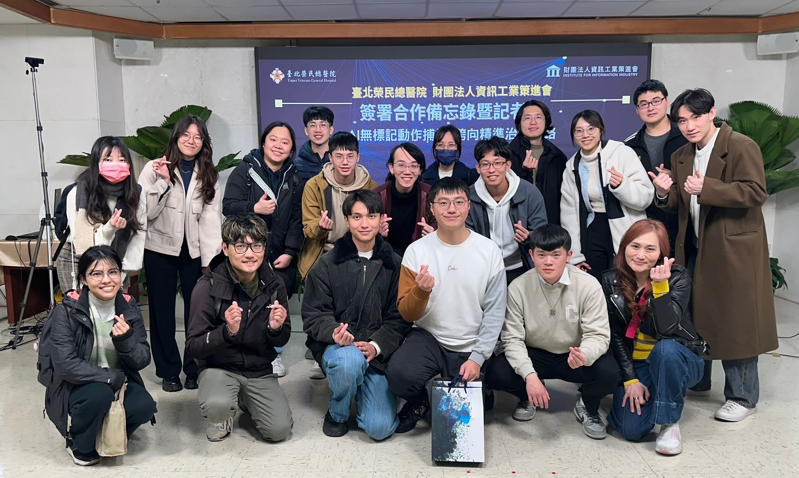

International Pitch Presentation at Mount Sinai Hospital
May 2025 · New York, USA

Presented our motion capture technology to investors and healthcare innovators, discussing clinical applications
in gait and rehabilitation and exploring opportunities for global deployment.
Economic Daily News
|
DIGITIMES
MOU Signing with Taipei Veterans General Hospital & Institute for Information Industry
February 2025 · Taipei, Taiwan

Established collaborations to advance clinical adoption and translational research for markerless motion analysis,
working closely with clinicians and industry partners.
NYCU NEWS
|
TVGH
|
China Times
|
United Daily News
|
ETtoday Health
|
Central News Agency
Taiwan Healthcare+ Expo – Live Demo of Markerless Motion Capture System
December 2024 · Nangang, Taiwan
Demonstrated our RGB-Based Multi-View 3D Markerless Motion Capture System to clinicians, industry experts,
and the public through live sessions, showcasing its applications in gait analysis and rehabilitation.